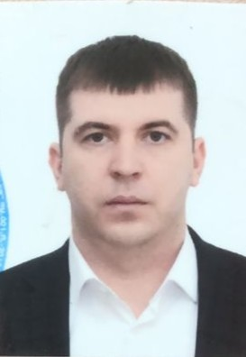
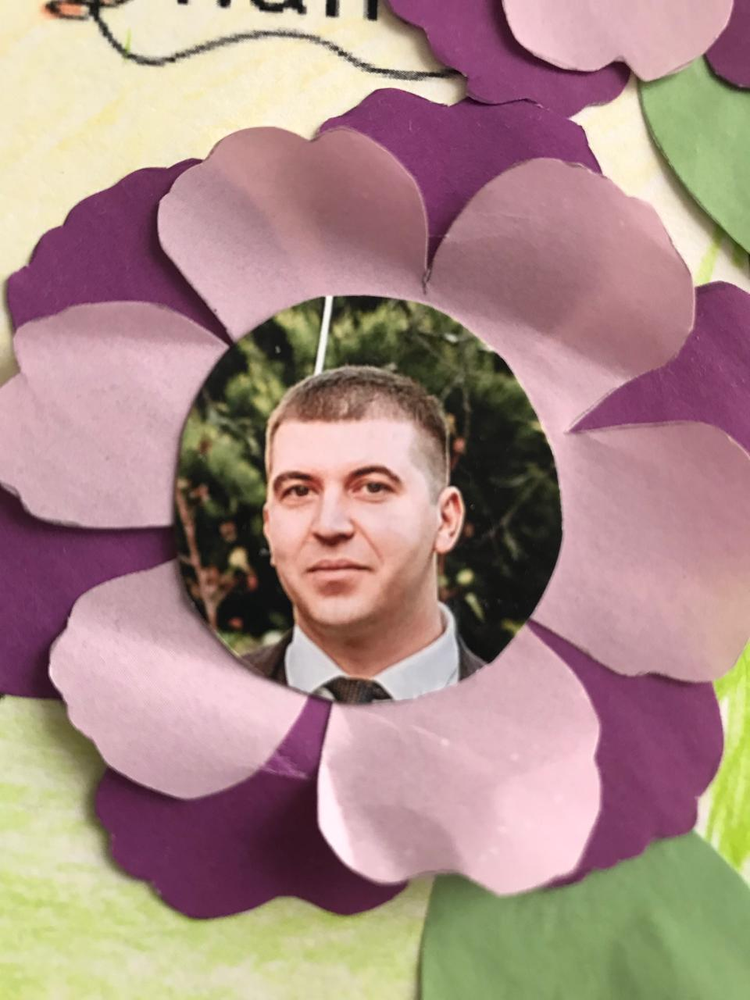

Родился: 26.07.1987
Возраст: 38
Окончил Кубанский Государственный Аграрный Университет КУБГАУ в
Факультет Бухучёта
Отец: Сергей Шевченко (24.09.1960)
Мать: Наталья Павловна Шевченко (Постол) (23.09.1960)
Брат: Павел Сергеевич Шевченко (21.11.1985)
Жена: Полина Эдуардовна Шевченко (Скрипка) (02.01.?)
Сын: Платон Родионович Шевченко (02.06.2021)
Родион Сергеевич Шевченко0: предположительно 06.2025. Родион Сергеевич Шевченко1. |